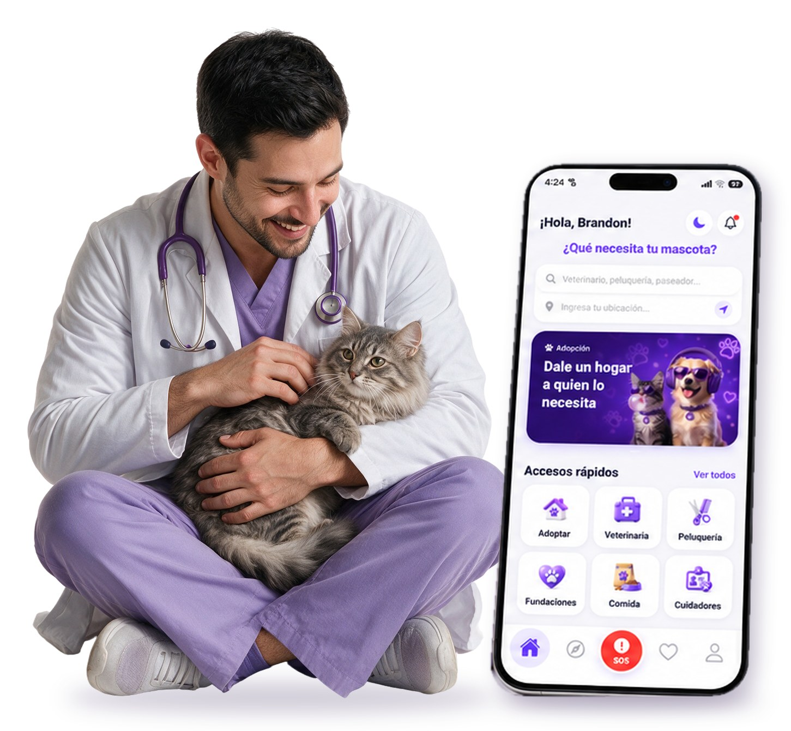

Veterinarias
Presenta especialidades, horarios, profesionales y opciones de atención.
Peluvi para negocios
Crece con Peluvi
Crea el perfil de tu negocio, presenta tus servicios y gestiona la relación con clientes desde un portal pensado para el sector de mascotas.
¿Para quién es?
Peluvi reúne los negocios que acompañan el bienestar de las mascotas en diferentes momentos.
Presenta especialidades, horarios, profesionales y opciones de atención.
Publica baños, cortes y cuidados especializados para cada mascota.
Muestra productos, novedades y medios de contacto de tu establecimiento.
Ofrece paseos, visitas, guardería y acompañamiento personalizado.
Da visibilidad a mascotas en adopción y conecta con posibles familias.
Si trabajas por el bienestar animal, Peluvi puede ayudarte a ser encontrado.
TU OPERACIÓN EN UN SOLO LUGAR
El portal está pensado para ayudarte a mantener organizada la información de tu negocio y atender oportunidades desde Peluvi.

Empieza fácil
Elige tu tipo de negocio y registra la información básica del proveedor.
Añade servicios, horarios, ubicación y datos que ayuden a decidir.
Ingresa al portal para mantener tu información y actividad organizada.
Empieza hoy
Crea la cuenta de tu negocio y empieza a construir presencia dentro de Peluvi.